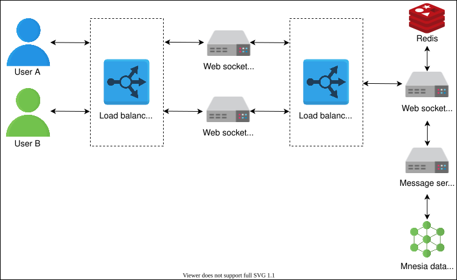
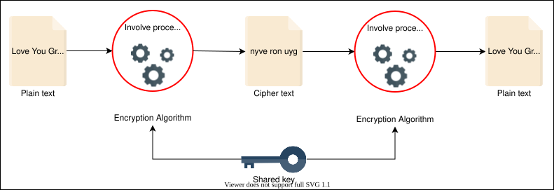

36. Design WhatsApp
System Design: WhatsApp
System Design: WhatsApp
Learn to design a WhatsApp messenger.
We'll cover the following
WhatsApp#
In today’s technological world, WhatsApp is an important messaging application that connects billions of people around the globe. Many users start their day by reading or sending WhatsApp messages to their friends and family. According to July 2021 estimates, WhatsApp has two billion active users worldwide. Further, an average WhatsApp user spends approximately 19.4 hours per month on the application.
In December 2020, the WhatsApp CEO tweeted that WhatsApp users share more than 100 billion messages per day, an increase of approximately 54% since 2018. The increase in messages sent globally per day is depicted in the following chart:
Design problem#
As system designers, we should be aware of the growth rate of users. There are many interesting questions about WhatsApp:
- How is this application designed?
- How does it work?
- What are the different types of components involved in it?
- How does WhatsApp enable billions of users to communicate with each other?
- How does WhatsApp keep all that data secure?
In this chapter, we’ll focus on the high-level and detailed design of the WhatsApp application to answer the above questions.
How will we design WhatsApp?#
We’ve divided the design of WhatsApp messenger into the following five lessons:
- Requirements: In this lesson, we’ll identify functional and non-functional requirements. We’ll also discuss resource estimations required for better and smooth operations of the proposed design of WhatsApp.
- High-level Design: We’ll focus on the high-level design of our WhatsApp version. We’ll also discuss essential APIs for our WhatsApp design.
- Detailed Design: In this lesson, we’ll describe the design of our WhatsApp messenger in detail. Initially, we’ll explain the design of each microservice, including connection with servers, send and receive messages and media content, and group messages. In the end, the design of each microservice is combined into the detailed design of WhatsApp.
- Evaluation: This lesson will explain how our version of WhatsApp fulfills non-functional requirements. We’ll also evaluate some trade-offs of our design.
- Quiz: Here, we’ll assess what we’ve learned in this chapter through a quiz.
Let’s start by discussing the requirements of our version of WhatsApp.
Requirements of WhatsApp’s Design
Requirements of WhatsApp’s Design
Learn about the functional and non-functional requirements for a chat application like WhatsApp.
Requirements#
Our design of the WhatsApp messenger should meet the following requirements.
Functional requirements#
-
Conversation: The system should support one-on-one and group conversations between users.
-
Acknowledgment: The system should support message delivery acknowledgment, such as sent, delivered, and read.
-
Sharing: The system should support sharing of media files, such as images, videos, and audio.
-
Chat storage: The system must support the persistent storage of chat messages when a user is offline until the successful delivery of messages.
-
Push notifications: The system should be able to notify offline users of new messages once their status becomes online.
Non-functional requirements#
-
Low latency: Users should be able to receive messages with low latency.
-
Consistency: Messages should be delivered in the order they were sent. Moreover, users must see the same chat history on all of their devices.
-
Availability: The system should be highly available. However, the availability can be compromised in the interest of consistency.
-
Security: The system must be secure via end-to-end encryption. The end-to-end encryption ensures that only the two communicating parties can see the content of messages. Nobody in between, not even WhatsApp, should have access.
Resource estimation#
WhatsApp is the most used messaging application across the globe. According to WhatsApp, it supports more than two billion users around the world who share more than 100 billion messages each day. We need to estimate the storage capacity, bandwidth, and number of servers to support such an enormous number of users and messages.
Storage estimation#
As there are more than 100 billion messages shared per day over WhatsApp, let’s estimate the storage capacity based on this figure. Assume that each message takes 100 Bytes on average. Moreover, the WhatsApp servers keep the messages only for 30 days. So, if the user doesn’t get connected to the server within these days, the messages will be permanently deleted from the server.
100 billion/day∗100 Bytes=10 TB/day
For 30 days, the storage capacity would become the following:
30∗10 TB/day=300 TB/month
Besides chat messages, we also have media files, which take more than 100 Bytes per message. Moreover, we also have to store users’ information and messages’ metadata—for example, time stamp, ID, and so on. Along the way, we also need encryption and decryption for secure communication. Therefore, we would also need to store encryption keys and relevant metadata. So, to be precise, we need more than 300 TB per month, but for the sake of simplicity, let’s stick to the number 300 TB per month.
Bandwidth estimation#
According to the storage capacity estimation, our service will get 10TB of data each day, giving us a bandwidth of 926 Mb/s.
10 TB/86400sec≈926 Mb/s
Note: To keep our design simple, we’ve ignored the media content (images, videos, documents, and so on). So, the number 926 might seem low.
We also require an equal amount of outgoing bandwidth as the same message from the sender would need to be delivered to the receiver.
Type | Estimates |
Total messages per day | 100 billion |
Storage required per day | 10 TB |
Storage for 30 days | 300 TB |
Incoming data per second | 926 Mb/s |
Outgoing data per second | 926 Mb/s |
Number of servers estimation#
WhatsApp handles around 10 million connections on a single server, which seems quite high for a server. However, it’s possible by extensive performance engineering. We’ll need to know all the in-depth details of a system, such as a server’s kernel, networking library, infrastructure configuration, and so on.
Note: We can often optimize a general-purpose server for special tasks by careful performance engineering of the full software stack.
Let’s move to the estimation of the number of servers:
No. of servers=Total connections per day/No. of connections per server=2 billion/10 million=200 servers
So, according to the above estimates, we require 200 chat servers.
Try it out#
Let’s analyze how the number of messages per day affects the storage and bandwidth requirements. For this purpose, we can change values in the following table to compute the estimates:
| Number of users per day (in billions) | 2 |
| Number of messages per day (in billions) | 100 |
| Size of each message (in bytes) | 100 |
| Number of connections a server can handle (in millions) | 10 |
| Storage estimation per day (in TB) | f10 |
| Incoming and Outgoing bandwidth (Mb/s) | f926.4 |
| Number of chat servers required | f200 |
Building blocks we will use#
The design of WhatsApp utilizes the following building blocks that have also been discussed in the initial chapters:

- Databases are required to store users’ and groups’ metadata.
- Blob storage is used to store multimedia content shared in messages.
- A CDN is used to effectively deliver multimedia content that’s frequently shared.
- A load balancer distributes incoming requests among the pool of available servers.
- Caches are required to keep frequently accessed data used by various services.
- A messaging queue is used to temporarily keep messages in a queue on a database when a user is offline.
In the next lesson, we’ll focus on the high-level design of the WhatsApp messenger.
High-level Design of WhatsApp
High-level Design of WhatsApp
Get introduced to the high-level design of the WhatsApp system.
High-level design#
At an abstract level, the high-level design consists of a chat server responsible for communication between the sender and the receiver. When a user wants to send a message to another user, both connect to the chat server. Both users send their messages to the chat server. The chat server then sends the message to the other intended user and also stores the message in the database.

The following steps describe the communication between both clients:
- User A and user B create a communication channel with the chat server.
- User A sends a message to the chat server.
- Upon receiving the message, the chat server acknowledges back to user A.
- The chat server sends the message to user B and stores the message in the database if the receiver’s status is offline.
- User B sends an acknowledgment to the chat server.
- The chat server notifies user A that the message has been successfully delivered.
- When user B reads the message, the application notifies the chat server.
- The chat server notifies user A that user B has read the message.
The process is shown in the following illustrations:
API design#
WhatsApp provides a vast amount of features to its users via different APIs. Some features are mentioned below:
- Send message
- Get message or receive message
- Upload a media file or document
- Download document or media file
- Send a location
- Send a contact
- Create a status
However, we’ll discuss essential APIs related to the first four features.
Send message#
The sendMessage API is as follows:
sendMessage(sender_ID, reciever_ID, type, text=none, media_object=none, document=none)
This API is used to send a text message from a sender to a receiver by making a POST API call to the /messages API endpoint. Generally, the sender’s and receiver’s IDs are their phone numbers. The parameters used in this API call are described in the following table:
Parameter | Description |
| This is a unique identifier of the user who sends the message. |
| This is a unique identifier of the user who receives the message. |
| The default message |
| This feild contains the text that has to be sent as a message. |
| This parameter is defined based on the type parameter. It represents the media file to be sent. |
| This represents the document file to be sent. |
Get message#
The getMessage API is as follows:
getMessage(user_Id)
Using this API call, users can fetch all unread messages when they come online after being offline for some time.
Parameter | Description |
| This is a unique identifier representing the user who has to fetch all unread messages. |
Upload media or document file#
The uploadFile API is as follows:
uploadFile(file_type, file)
We can upload media files via the uploadFile API by making a POST request to the /v1/media API endpoint. A successful response returns an ID that’s forwarded to the receiver. The maximum file size for media that can be uploaded is 16 MB, while the limit is 100 MB for a document.
Parameter | Description |
| This represents the type of file uploaded via the API call. |
| This contains the file being uploaded via the API call. |
Download a document or media file#
The downloadFile API is as follows:
downloadFile(user_id, file, file_id)
The parameters of this API call are explained in the following table:
Parameter | Description |
| This is a unique identifier of the user who will download a file. |
| This contains the file to be downloaded. |
| This is a unique identifier of a file. It’s generated while uploading a file via |
In the next lesson, we’ll focus on the detailed design of the WhatsApp system.
Detailed Design of WhatsApp
Detailed Design of WhatsApp
Learn about the design of the WhatsApp system in detail, and understand the interaction of various microservices.
Detailed design#
The high-level design discussed in the previous lesson doesn’t answer the following questions:
-
How is a communication channel created between clients and servers?
-
How can the high-level design be scaled to support billions of users?
-
How is the user’s data stored?
-
How is the receiver identified to whom the message is delivered?
To answer all these questions, let’s dive deep into the high-level design and explore each component in detail. Let’s start with how users make connections with the chat servers.
Connection with a WebSocket server#
In WhatsApp, each active device is connected with a WebSocket server via WebSocket protocol. A WebSocket server keeps the connection open with all the active (online) users. Since one server isn’t enough to handle billions of devices, there should be enough servers to handle billions of users. The responsibility of each of these servers is to provide a port to every online user. The mapping between servers, ports, and users is stored in the WebSocket manager that resides on top of a cluster of the data store. In this case, that’s Redis.

Point to Ponder
Question
Why is WebSocket preferred over HTTP(S) protocol for client-server communication?
Send or receive messages#
The WebSocket manager is responsible for maintaining a mapping between an active user and a port assigned to the user. Whenever a user is connected to another WebSocket server, this information will be updated in the data store.
A WebSocket server also communicates with another service called message service. Message service is a repository of messages on top of the Mnesia database cluster. The message service exposes APIs to receive messages by various filters, such as user ID, message ID, and so on.

Now, let’s assume that user A wants to send a message to user B. As shown in the above figure, both users are connected to different WebSocket servers. The system performs the following steps to send messages from user A to user B:
-
User A communicates with the corresponding WebSocket server to which it is connected.
-
The WebSocket server associated with user A identifies the WebSocket to which user B is connected via the WebSocket manager. If user B is online, the WebSocket manager responds back to user A’s WebSocket server that user B is connected with its WebSocket server.
-
Simultaneously, the WebSocket server sends the message to the message service and is stored in the Mnesia database where it gets processed in the first-in-first-out order. As soon as these messages are delivered to the receiver, they are deleted from the database.
-
Now, user A’s WebSocket server has the information that user B is connected with its own WebSocket server. The communication between user A and user B gets started via their WebSocket servers.
-
If user B is offline, messages are kept in the Mnesia database. Whenever they become online, all the messages intended for user B are delivered via push notification. Otherwise, these messages are deleted permanently after 30 days.
Both users (sender and receiver) communicate with the WebSocket manager to find each other’s WebSocket server. Consider a case where there can be a continuous conversation between both users. This way, many calls are made to the WebSocket manager. To minimize the latency and reduce the number of these calls to the WebSocket manager, each WebSocket server caches the following information:
-
If both users are connected to the same server, the call to the WebSocket manager is avoided.
-
It caches information of recent conversations about which user is connected to which WebSocket server.
Point to Ponder
Question
The data in the cache will become outdated if a user gets disconnected and connects with another server. Keeping this in mind, how long should a WebSocket server cache information?
Send or receive media files#
So far, we’ve discussed the communication of text messages. But what happens when a user sends media files? Usually, the WebSocket servers are lightweight and don’t support heavy logic such as handling the sending and receiving of media files. We have another service called the asset service, which is responsible for sending and receiving media files.
Moreover, the sending of media files consists of the following steps:
-
The media file is compressed and encrypted on the device side.
-
The compressed and encrypted file is sent to the asset service to store the file on blob storage. The asset service assigns an ID that’s communicated with the sender. The asset service also maintains a hash for each file to avoid duplication of content on the blob storage. For example, if a user wants to upload an image that’s already there in the blob storage, the image won’t be uploaded. Instead, the same ID is forwarded to the receiver.
-
The asset service sends the ID of media files to the receiver via the message service. The receiver downloads the media file from the blob storage using the ID.
-
The content is loaded onto a CDN if the asset service receives a large number of requests for some particular content.
The following figure demonstrates the components involved in sharing media files over WhatsApp messenger:

Support for group messages#
WebSocket servers don’t keep track of groups because they only track active users. However, some users could be online and others could be offline in a group. For group messages, the following three main components are responsible for delivering messages to each user in a group:
- Group message handler
- Group message service
- Kafka
Let’s assume that user A wants to send a message to a group with some unique ID—for example, Group/A. The following steps explain the flow of a message sent to a group:
-
Since user A is connected to a WebSocket server, it sends a message to the message service intended for
Group/A. -
The message service sends the message to Kafka with other specific information about the group. The message is saved there for further processing. In Kafka terminology, a group can be a topic, and the senders and receivers can be producers and consumers, respectively.
-
Now, here comes the responsibility of the group service. The group service keeps all information about users in each group in the system. It has all the information about each group, including user IDs, group ID, status, group icon, number of users, and so on. This service resides on top of the MySQL database cluster, with multiple secondary replicas distributed geographically. A Redis cache server also exists to cache data from the MySQL servers. Both geographically distributed replicas and Redis cache aid in reducing latency.
-
The group message handler communicates with the group service to retrieve data of
Group/Ausers. -
In the last step, the group message handler follows the same process as a WebSocket server and delivers the message to each user.

Put everything together#
We discussed the features of our WhatsApp system design. It includes user connection with a server, sending messages and media files, group messages, and end-to-end encryption, individually. The final design of our WhatsApp messenger is as follows:

In the next lesson, we’ll evaluate our design and look into the non-functional requirements.
Evaluation of WhatsApp’s Design
Evaluation of WhatsApp’s Design
Evaluate the WhatsApp design and the associated non-functional requirements.
Fulfill the requirements#
Our non-functional requirements for the proposed WhatsApp design are low latency, consistency, availability, and security. Let’s discuss how we have achieved these requirements in our system:
-
Low latency: We can minimize the latency of the system at various levels:
-
We can do this through geographically distributed WebSocket servers and the cache associated with them.
-
We can use Redis cache clusters on top of MySQL database clusters.
-
We can use CDNs for frequently sharing documents and media content.
-
-
Consistency: The system also provides high consistency in messages with the help of a FIFO messaging queue with strict ordering. However, the ordering of messages would require the Sequencer to provide ID with appropriate causality inference mechanisms to each message. For offline users, the Mnesia database stores messages in a queue. The messages are sent later in a sequence after the user goes online.
-
Availability: The system can be made highly available if we have enough WebSocket servers and replicate data across multiple servers. When a user gets disconnected due to some fault in the WebSocket server, the session is re-created via a load balancer with a different server. Moreover, the messages are stored on the Mnesia cluster following the primary-secondary replication model, which provides high availability and durability.
-
Security: The system also provides an end-to-end encryption mechanism that secures the chat between users.
Point to Ponder
Question
In the event of a network partition, what should the system choose to compromise between consistency and availability?
Non-functional Requirements | Approaches |
Minimizing latency |
|
Consistency |
|
Availability |
|
Security |
|
Trade-offs#
We’ve seen that our proposed WhatsApp system fulfills the functional and non-functional requirements. However, two major trade-offs exist in the proposed WhatsApp design:
- There’s a trade-off between consistency and availability.
- There’s a trade-off between latency and security.
The trade-off between consistency and availability#
According to the CAP theorem, in the event of a network failure or partition, the system can provide either consistency or availability. So, in the case of our WhatsApp design, we have to choose either consistency or availability. In WhatsApp, the order of messages sent or received by a user is essential. Therefore, we should prioritize consistency rather than availability.
The trade-off between latency and security#
Low latency is an essential factor in system design that provides a real-time experience to users. However, on the other side, sharing information or data over WhatsApp might be insecure without encryption. The absence of a proper security mechanism makes the data vulnerable to unauthorized access. So, we can accept a trade-off prioritizing the secure transmission of messages over low latency.
We might wonder where the trade-off is. Often, communication involves multimedia. Encrypting them in near real-time on the sender device and decrypting on the receiver side can be taxing for the devices, causing latency. The process is illustrated in the following figure:

Summary#
In this chapter, we designed a WhatsApp messenger. First, we identified the functional and non-functional requirements along with the resources estimation crucial for the design. Second, we focused on the high-level and detailed design of the WhatsApp system, where we described various components responsible for different services. Finally, we evaluated the non-functional requirements and highlighted some trade-offs in the design.
This design problem highlighted that we can optimize general-purpose computational resources for specific use cases. WhatsApp optimized its software stack to handle a substantially large number of connections on the commodity servers.
Quiz on WhatsApp’s Design
Quiz on WhatsApp’s Design
Test your understanding of the concepts related to our WhatsApp design via a quiz.
The WebSocket manager is responsible for which function?
A)
Routing data toward a user
B)
Maintaining the mapping between users and their WebSocket handlers
C)
Reconnecting users to blob storage
D)
None of the above